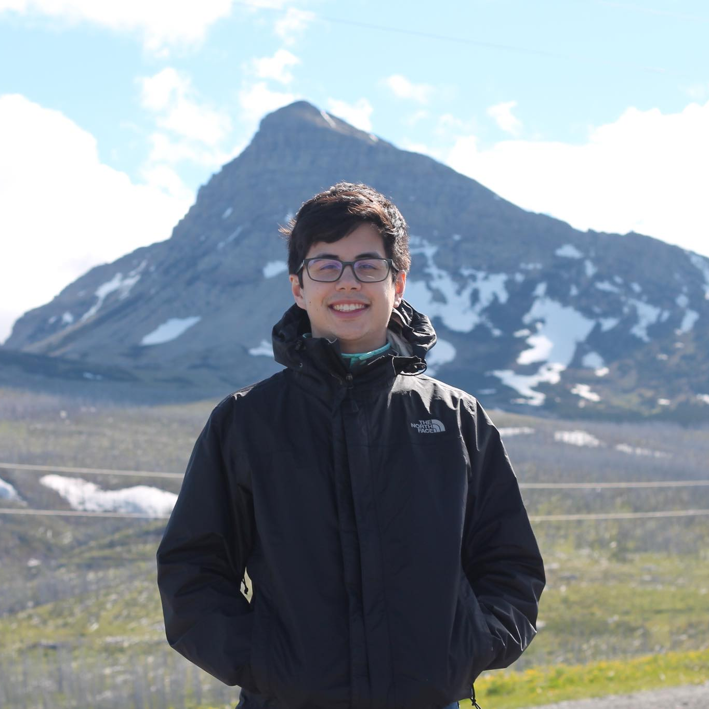

I am a recent graduate of the University of Washington, where I earned a B.S. in Computer Science. Currently, I am a software engineering intern at the Allen Institute for Artificial Intelligence, where I work on Semantic Scholar. Previously, I was a software engineering intern at Versive.
During my undergrad, I did research with Andy Ko in his Code & Cognition Lab. I contributed to work on intelligent programming tutors and conducted independent research on CS transfer students. My research led to the publication of my first paper, Experiences of Computer Science Transfer Students, which I presented at ICER 2018 in Espoo, Finland.
This year, I am applying to Ph.D. programs to explore research options in computing education research and human-computer interaction. You can read about my research experience here.
